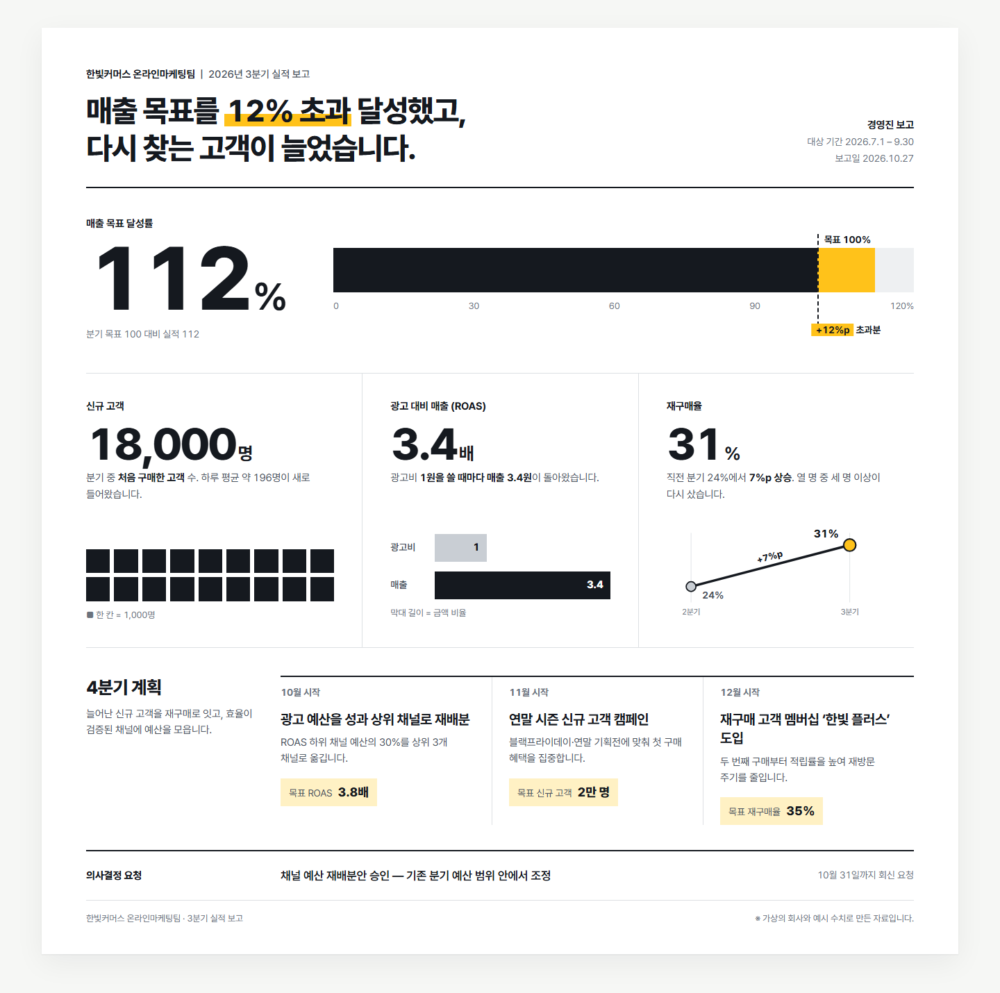
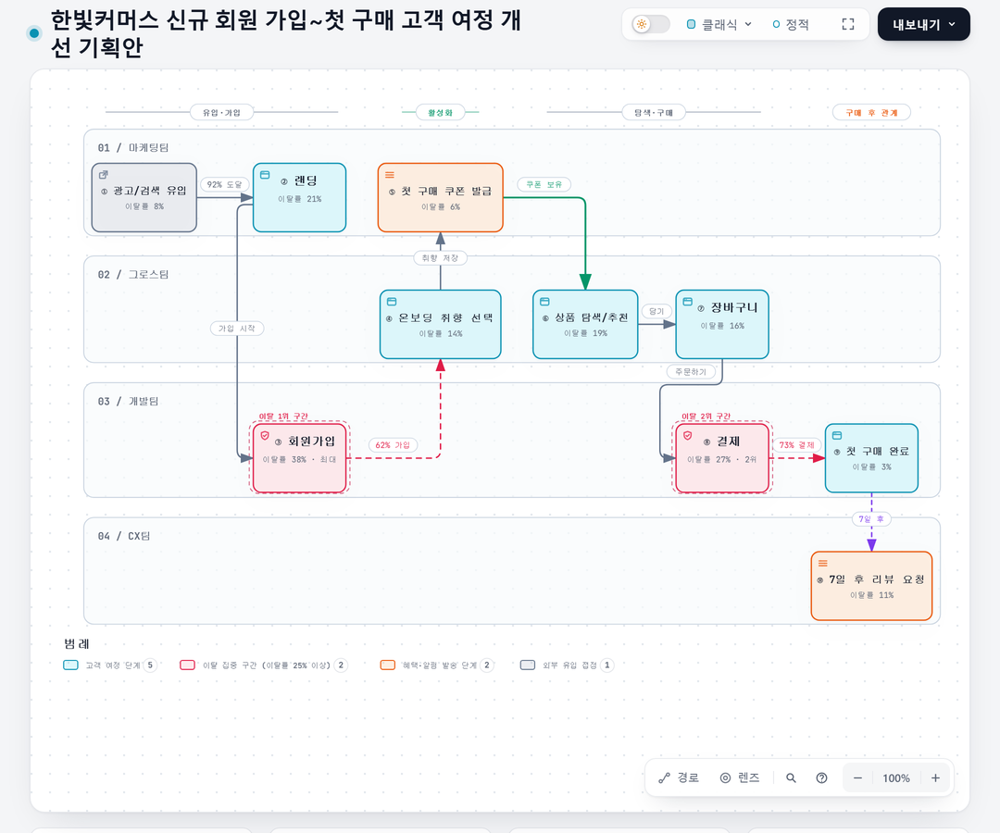
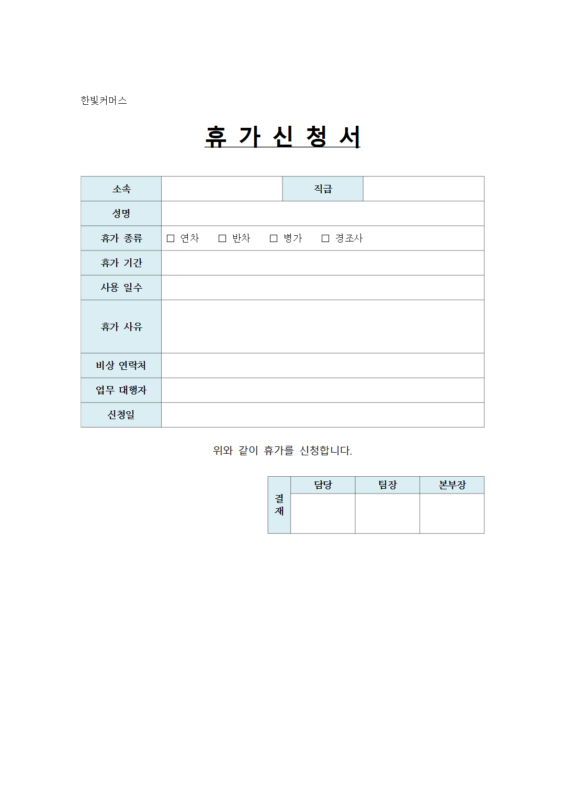
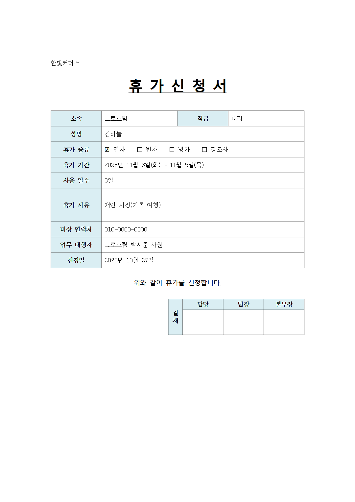
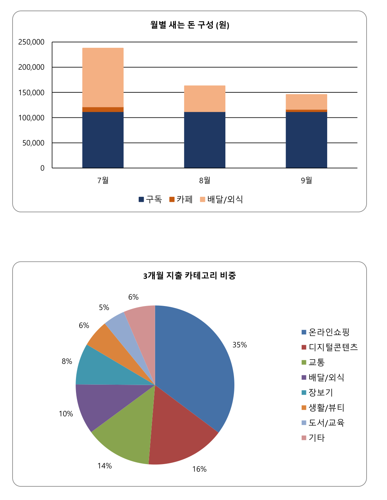
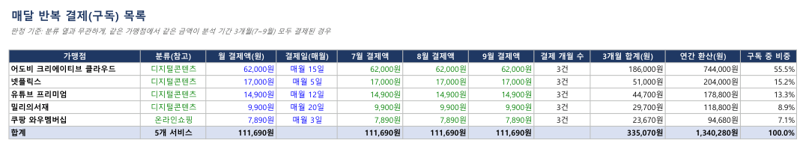
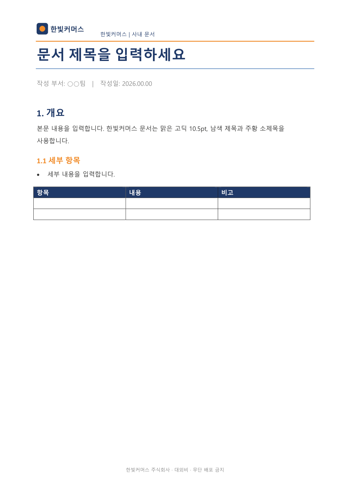
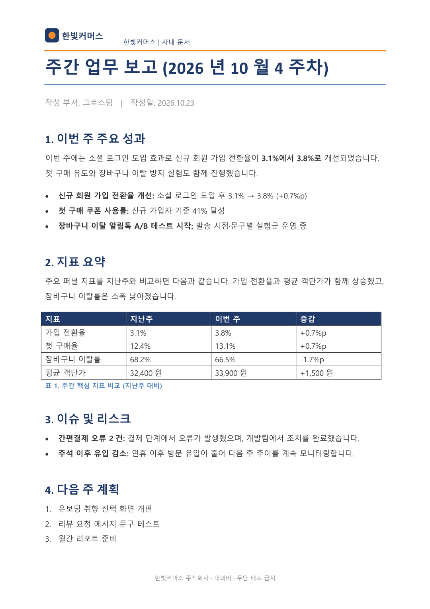

Claude Code(또는 챗GPT 코덱스)에 붙여 쓰는 무료 스킬 다섯 개예요. 보고 인포그래픽, 기획안 흐름도, 한글 양식 채우기, 카드 내역 정리, 회사 양식 보고서까지. 저희가 가상의 회사 '한빛커머스'로 직접 돌려 본 결과와 그대로 쓰는 요청 문장을 정리했어요.

설치: npx skills add alchaincyf/huashu-design (MIT, 별 2.6만). 요청 앞에 /huashu-design 을 붙이면 디자인 방향을 몇 개 뽑아 고른 뒤 한 장으로 만들어요. PPT·웹 시안도 같은 방식이에요.
설치: npx skills add tt-a1i/archify -g (MIT, 별 8.9만). /archify 뒤에 기획 내용을 쓰면 팀별 단계와 문제 구간이 표시된 흐름도(HTML)를 만들어요. 그림 속 글자가 작아서 확대해서 보세요.

github.com/jkf87/hwpx-skill 을 내려받아 .claude/skills 에 넣고, pip install python-hwpx lxml 을 한 번 실행하세요. 양식 .hwpx 파일과 넣을 내용을 주면 칸을 채운 새 파일을 만들어요. 옛 .hwp 는 한글에서 .hwpx 로 다시 저장한 뒤 쓰세요.


클로드 앱에는 이미 들어 있고, Claude Code에서는 github.com/anthropics/skills 의 xlsx 폴더를 .claude/skills 에 넣으면 돼요. 카드사에서 받은 내역 파일을 주고 아래 문장을 쓰세요. 차트가 깨져 보이면 '차트 축 이름이랑 범례가 보이게 고쳐 줘'라고 한 번 더 말하세요(저희도 한 번 고쳤어요).


github.com/ferdinandobons/brand-docs 를 내려받아 pip install -r requirements.txt 를 실행하세요(MIT). 회사 워드·PPT 양식을 한 번 보여 주면 로고·색·제목 스타일을 익혀 두고, 그 뒤로 새 문서를 그 양식으로 만들어요. 내가 안 준 숫자는 지어 넣을 수 있으니 꼭 확인하세요.


huashu-design
/huashu-design 우리 팀 (3분기 실적 보고)를 임원 보고용 인포그래픽 한 장으로 만들어 줘. 숫자: (매출 목표 대비 112%, 신규 고객 1만 8천 명 …). 한국어로, HTML 한 파일로.
archify
/archify (신규 회원 가입부터 첫 구매까지 고객 여정 개선) 기획안을 팀별 단계가 보이는 흐름도로 그려 줘. 이탈이 큰 구간은 따로 표시해 줘. 한국어로.
hwpx-skill
(휴가신청서.hwpx) 양식을 분석해서 아래 내용으로 칸을 채운 새 파일을 만들어 줘. 원본 서식은 그대로 두고. 이름 (김하늘), 부서 (마케팅팀), 기간 (11월 3일~5일), 종류 (연차), 사유 (개인 사유).
엑셀 스킬
(카드내역.csv)를 카테고리별 월간 표와 차트로 정리하고, 매달 같은 곳에서 같은 금액이 나간 반복 결제(구독)를 따로 뽑아 줘. 새는 돈이 얼마인지 요약해서 엑셀 파일로.
brand-docs
(회사_문서양식.docx)를 우리 회사 양식으로 학습해 줘. 그다음 이 양식으로 (이번 주 주간 업무 보고)를 만들어 줘. 내용: (…). 내가 안 준 숫자는 비워 둬.
도움이 되셨다면
@ai.antenna.kr
에서 바로 쓰는 AI 활용법을 계속 올립니다.